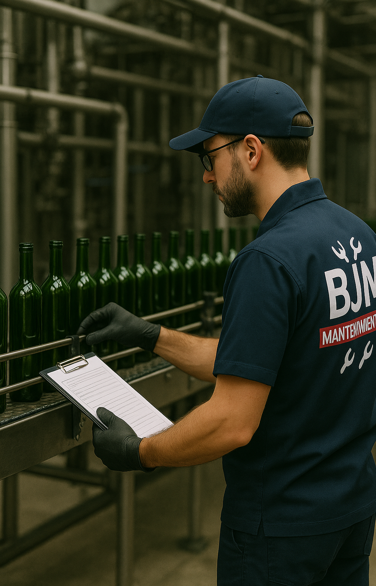

¿Por qué es clave el mantenimiento industrial en Cádiz?
Publicado el 13 de junio de 2025
En la provincia de Cádiz, con su fuerte presencia de industrias portuarias, energéticas y alimentarias, el mantenimiento industrial no es un lujo, es una necesidad estratégica. Un buen mantenimiento evita averías costosas, mejora la seguridad y alarga la vida útil de la maquinaria.
Beneficios principales
- Evita paradas inesperadas en la producción.
- Reduce costes a largo plazo.
- Mejora la eficiencia energética.
- Garantiza el cumplimiento normativo y legal.
¿Cómo elegir una empresa especializada?
Busca experiencia, equipo técnico certificado y capacidad de respuesta. En BJM Mantenimientos ofrecemos soluciones integrales adaptadas a cada tipo de industria.

Nuestra experiencia
Con más de 20 años atendiendo instalaciones industriales en toda la provincia de Cádiz, somos referentes en mantenimientos correctivos, preventivos y predictivos. Trabajamos con responsabilidad, precisión y compromiso.
Volver al blog